Deep learning for NeuroImaging in Python.
Note
This page is a reference documentation. It only explains the class signature, and not how to use it. Please refer to the gallery for the big picture.
- class nidl.losses.KernelMetric(kernel='gaussian', bandwidth: str | float | list[float] | ndarray = 'scott')[source]¶
Bases:
BaseEstimatorInterface for fast weighting matrix computation.
It computes a weighting matrix
 between input samples based on
Kernel Density Estimation (KDE) [R11], [R12]. Concretely, it computes the
following weighting matrix between multivariate samples
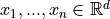:
between input samples based on
Kernel Density Estimation (KDE) [R11], [R12]. Concretely, it computes the
following weighting matrix between multivariate samples
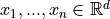: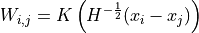
with
 a kernel (or “weighting function”) such that:
a kernel (or “weighting function”) such that: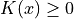 (positive)
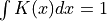 (normalized)
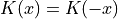 (symmetric)
and 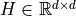 is the bandwidth in the KDE estimation of p(X).
 is a symmetric definite-positive and it can be automatically
computed based on Scott’s rule [R13] or Silverman’s rule [R14] if required.
In that case, the bandwidth is computed as a scaled version of the
diagonal terms in the data covariance matrix:
is a symmetric definite-positive and it can be automatically
computed based on Scott’s rule [R13] or Silverman’s rule [R14] if required.
In that case, the bandwidth is computed as a scaled version of the
diagonal terms in the data covariance matrix: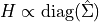
- Parameters:
kernel : {‘gaussian’, ‘epanechnikov’, ‘exponential’, ‘linear’, ‘cosine’}, default=’gaussian’
The kernel applied to the distance between samples.
bandwidth : {‘scott’, ‘silverman’} or float or list of float, default=”scott”
The method used to calculate the estimator bandwidth:
If bandwidth is ‘scott’ or ‘silverman’,
is a scaled
version of the diagonal terms in the data covariance matrix.If bandwidth is scalar (float or int),
is set to a
diagonal matrix:
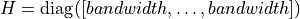.If bandwidth is a list of floats,
is a diagonal matrix
with the list values on the diagonal:
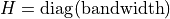.If bandwidth is a 2d array, it must be of shape (n_features, n_features)
Notes
Scott’s Rule [R11] estimates the bandwidth as:
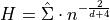
where 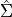 is the covariance matrix of the data,
 is the number of samples, and
is the number of samples, and  is the number of
features (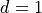 for univariate data). Here, we only consider
the diagonal terms (assuming features decorrelation) for numerical
stability.
is the number of
features (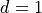 for univariate data). Here, we only consider
the diagonal terms (assuming features decorrelation) for numerical
stability.Silverman’s rule of thumb [R12] for multivariate data is:
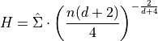
References
[R11] (1,2,3)Rosenblatt, M. (1956). “Remarks on some nonparametric estimates of a density function”. Annals of Mathematical Statistics.
[R12] (1,2,3)Parzen, E. (1962). “On estimation of a probability density function and mode”. Annals of Mathematicals Statistics.
- fit(X)[source]¶
Computes the bandwidth in the kernel density estimation.
- Parameters:
X : array of shape (n_samples, n_features)
Input data used to estimate the bandwidth (based on covariance matrix).
- Returns:
self : KernelMetric
- pairwise(X)[source]¶
- Parameters:
X : array of shape (n_samples, n_features)
Input data.
- Returns:
S : array of shape (n_samples, n_samples)
Similarity matrix between input data.
Follow us